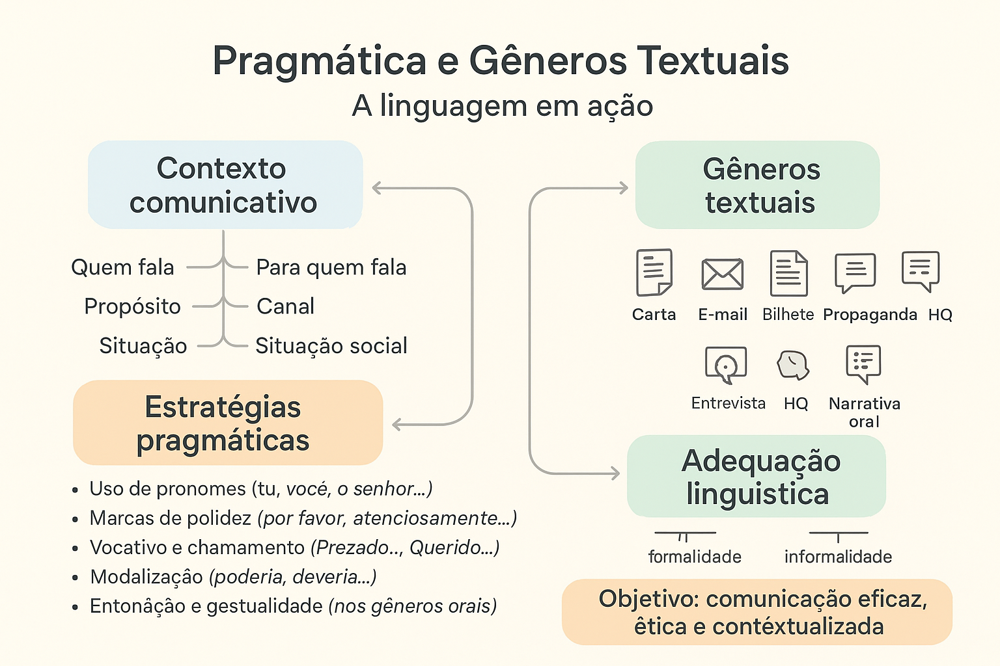

Pragmática e Gêneros Textuais: A Linguagem em Ação na Sociedade
Durante grande parte da história dos estudos linguísticos, o texto foi abordado como um artefato estático e puramente gramatical — um mero encadeamento de orações que bastaria dissecar morfossintaticamente para esgotar sua compreensão. No entanto, a vida social não se processa por meio de frases soltas no vácuo de um laboratório: nós interagimos no mundo através de mensagens instantâneas, e-mails institucionais, relatórios jurídicos, memes irônicos, bulas de remédio, notícias de jornal, piadas e teses acadêmicas. Toda essa profusão comunicativa adquire forma e eficácia por meio dos Gêneros Textuais, e a disciplina que ilumina a engrenagem viva de suas intenções e contextos é a Pragmática.
Como demonstraram as investigações fundamentais do filósofo russo Mikhail Bakhtin (1953/1979) e do linguista brasileiro Luiz Antônio Marcuschi (2008), os gêneros não são molduras rígidas ou formulários desprovidos de vida: são formas históricas de ação social. Não escolhemos as palavras aleatoriamente; nossas escolhas de vocabulário, tempo verbal, marcas de polidez e grau de formalidade são diretamente determinadas pela esfera humana em que o texto circula, por quem é o nosso interlocutor e pelo objetivo pragmático que almejamos alcançar.
No contexto educacional contemporâneo, da Base Nacional Comum Curricular (BNCC) e dos grandes exames de admissão (como o ENEM e o PAES UEMA), compreender a simbiose entre Pragmática e Gêneros Textuais é o caminho indispensável para desenvolver a autêntica competência comunicativa (HYMES, 1972) — superando o binarismo estéril do "certo ou errado" para dominar o princípio soberano da adequação discursiva.
Neste artigo acadêmico completo, você explorará a fundamentação bakhtiniana dos gêneros do discurso, a distinção cardeal entre tipos e gêneros textuais, o mapeamento das estratégias pragmáticas (atos de fala, dêixis, polidez e modalização), o princípio da adequação linguística, roteiro metodológico de análise textual, exemplos comentados passo a passo, questões resolvidas e sínteses teóricas.

A fundamentação teórica: Mikhail Bakhtin e as esferas da atividade humana
O ponto de partida epistemológico para a articulação entre texto, contexto e sociedade repousa sobre a seminal formulação de Mikhail Bakhtin em seu ensaio Os Gêneros do Discurso (escrito em 1952-1953). Bakhtin sustentou que a atividade humana é infinitamente diversificada e que cada esfera de sua realização (a vida cotidiana, a imprensa, o ambiente jurídico, a academia, a religião, a arte) elabora seus próprios tipos de enunciados:
A estabilidade relativa dos gêneros segundo Bakhtin
“O emprego da língua efetua-se em forma de enunciados (orais e escritos) concretos e únicos, proferidos pelos integrantes desse ou daquele campo da atividade humana. Esses enunciados refletem as condições específicas e as finalidades de cada referido campo não só por seu conteúdo temático e pelo estilo de linguagem, mas, acima de tudo, por sua construção composicional. Todos esses três elementos fundem-se indissoluvelmente no todo do enunciado, e cada enunciado em particular é individual, mas cada esfera de utilização da língua elabora seus tipos relativamente estáveis de enunciados, sendo isso o que denominamos gêneros do discurso” (BAKHTIN, 1953/1979, p. 279; MARCUSCHI, 2008).
Sob o prisma da Pragmática moderna, a definição de Bakhtin revela que um gênero textual nunca é um receptáculo neutro: ele é um contrato pragmático prévio entre os interlocutores. Quando um cidadão recebe um documento intitulado "Notificação Extrajudicial", o próprio gênero aciona um conjunto imediato de expectativas, relações de poder, gravidade e exigências de resposta institucional que nenhuma frase isolada conseguiria provocar.
Gêneros Textuais vs. Tipos Textuais: distinção estrutural e pragmática
Um dos equívocos mais persistentes no ensino de Língua Portuguesa é a confusão entre gêneros textuais e tipos textuais. Conforme sistematizado magistralmente por Marcuschi (2002, 2008) e Bronckart (1999), essas duas categorias situam-se em níveis ontológicos radicalmente distintos:
Tipos Textuais (Estruturas Linguísticas)
Constituem uma categoria teórica fechada, finita (entre cinco e seis tipos universais) e estritamente gramatical. Definem-se pela natureza de suas sequências linguísticas internas (tempos verbais predominantes, sintaxe e relações lógicas).
Classes Fundamentais: Narração, Descrição, Dissertação/Argumentação, Exposição e Injunção/Instrução.
Gêneros Textuais (Práticas Sociocomunicativas)
Constituem uma categoria empírica aberta, infinita, fluida, histórica e culturalmente determinada. Definem-se pela sua função pragmática na sociedade, canal de suporte, papel dos interlocutores e propósito comunicativo.
Exemplos: E-mail corporativo, editorial, bula de remédio, meme, podcast, resenha crítica, abaixo-assinado, palestra, petição.
A tabela a seguir consolida as propriedades contrastivas entre as duas ordens taxonômicas:
| Critério Teórico | Tipos Textuais | Gêneros Textuais |
|---|---|---|
| Natureza Epistemológica | Linguística, formal, abstrata e teórica. | Sociocomunicativa, histórica, empírica e funcional. |
| Extensão do Conjunto | Restrita e finita (aproximadamente 5 matrizes). | Infinita, maleável e em constante expansão histórica. |
| Elemento Constitutivo | Sequências de frases e traços sintático-verbais. | Objetivo pragmático, tema, estilo e meio de circulação. |
| Relação de Composição | Um único gênero pode abrigar múltiplos tipos. | Um gênero atua como a concretização viva dos tipos. |
| Exemplo de Aplicação | Sequência narrativa no pretérito perfeito. | Reportagem jornalística que mescla narração e exposição. |
Estratégias pragmáticas constitutivas dos gêneros textuais
Para que um gênero textual atinja plenamente seu objetivo discursivo, o falante mobiliza intencionalmente um conjunto articulado de estratégias pragmáticas:
1. Força Ilocucionária Predominante (Atos de Fala nos Gêneros)
Como teorizado por Austin e Searle, falar é agir. Nos gêneros textuais, essa ação ganha contornos tipificados:
- Gêneros com força Diretiva: receitas culinárias, manuais de montagem, bulas farmacêuticas, editais de concursos e leis têm como meta primordial fazer o leitor agir de determinada maneira (prescrever comportamentos);
- Gêneros com força Assertiva: relatórios de auditoria, notícias jornalísticas, verbetes enciclopédicos e artigos científicos têm o objetivo de comprometer o enunciador com a verdade factual descrita;
- Gêneros com força Compromissiva: termos de ajustamento de conduta, contratos comerciais e promissórias vinculam juridicamente o autor a uma ação futura;
- Gêneros com força Declarativa: certidões de nascimento, alvarás de funcionamento e sentenças judiciais transformam o estatuto social e legal dos cidadãos.
2. Dêixis e Construção da Cena Enunciativa
A calibragem de pronomes e de advérbios de tempo e espaço constrói a distância ou a proximidade necessária ao gênero:
- No Artigo Científico: busca-se a despersonalização através da terceira pessoa ou do uso modesto do "nós acadêmico" (“analisou-se o fenômeno”; “propomos a hipótese”), ancorando o discurso em dados empíricos e apagando a subjetividade arbitrária;
- Na Crônica Literária: privilegia-se a primeira pessoa íntima (eu), a dêixis temporal imediata (hoje, agora) e a cumplicidade afetiva com o leitor;
- No Discurso de Posse Política: alterna-se o eu institucional de liderança com o nós inclusivo, criando uma aliança simbólica de responsabilidade com toda a população alocutária.
3. Marcas de Polidez e Gerenciamento de Faces
Como demonstram Brown e Levinson (1987), cada gênero textual exige um ritual específico de preservação da face positiva (autoimagem e estima) e da face negativa (liberdade e não intromissão):
- Em Petições e Ofícios Públicos: predomina a polidez negativa com fórmulas protocolares de reverência (“Vossa Excelência”, “Nestes termos, pede e espera deferimento”), minimizando a imposição do pedido perante a autoridade;
- Nas Redes Sociais e Aplicativos de Mensagens: prevalece a polidez positiva mediante emojis, saudações informais e apelidos, buscando estreitar laços de afeto e reciprocidade no grupo.
4. Modalização Discursiva e Atenuadores (Hedges)
A modalização é o recurso pragmático pelo qual o enunciador sinaliza seu grau de adesão, certeza ou reserva em relação ao que profere. Em um artigo de opinião ou redação dissertativa, empregam-se modalizadores asseverativos (“é indubitável que”, “certamente”) para demarcar convicção argumentativa; em contrapartida, em um parecer técnico-científico, utilizam-se atenuadores cautelosos (“os dados sugerem que”, “é provável que”, “em certas circunstâncias”) para blindar o pesquisador contra refutações absolutas.
Pragmática e adequação linguística: além do preconceito gramatical
O conceito mais libertador e transformador que a Pragmática introduz no estudo dos gêneros textuais é o de Adequação Linguística. Como ensinam linguistas como Marcos Bagno (2007) e Sírio Possenti (1996), a linguagem humana não é governada por uma régua maniqueísta de "certo contra errado", mas por uma lógica situacional de adequação ou inadequação ao contexto comunicativo:
Critérios de Avaliação da Adequação Pragmática
- Quem são os interlocutores? Qual a distância social, etária, profissional e afetiva entre eles?
- Qual é o gênero textual mobilizado? Trata-se de uma conversa informal de corredor ou de uma arguição de banca de mestrado?
- Qual é o meio/suporte físico? Trata-se de um post rápido no feed do Instagram ou de um editorial de jornal impresso?
- Qual é a meta intencional? O objetivo é comover, ordenar, divertir, legislar ou ensinar?
A inadequação pragmática nos dois extremos
O domínio da competência comunicativa exige saber circular por todos os registros. Usar gírias chulas e abreviações da internet em um recurso jurídico perante o Supremo Tribunal Federal constitui uma inadequação pragmática grave por ruptura de decoro institucional. Contudo, utilizar mesóclises e jargões jurídicos pedantes para pedir um pão na padaria do bairro (“Vós me forneceríeis um quarto de quilo de pão francês?”) constitui uma inadequação igualmente desastrosa por pedantismo e quebra da polidez cooperativa cotidiana.
Roteiro metodológico: como analisar a dimensão pragmática de um gênero
Para estudantes de Letras, revisores textuais e candidatos a exames vestibulares, a dissecação pragmática de qualquer exemplar de gênero textual deve seguir este roteiro sistemático:
Passo a Passo da Análise Pragmática de Gêneros
- Identificação da esfera sociodiscursiva e do suporte: determinar onde o texto foi publicado (mídia impressa, diário oficial, rede social digital, ambiente acadêmico);
- Diagnóstico da relação interpessoal dos sujeitos: mapear quem é o autor projetado (ethos) e a quem o discurso se destina (público-alvo geral ou especializado);
- Isolamento da força ilocucionária primária: classificar a intenção predominante (informar, persuadir, instruir, celebrar, cobrar direitos);
- Exame das sequências tipológicas dominantes: verificar como narração, argumentação ou descrição cooperam a serviço da meta comunicativa do gênero;
- Inspeção dos marcadores de polidez e modalização: catalogar pronomes de tratamento, atenuadores, vocativos e figuras de linguagem;
- Avaliação do cumprimento das convenções do gênero: julgar se o texto atende com eficácia e elegância às expectativas pragmáticas dos interlocutores daquela comunidade discursiva.
Exemplos práticos de análise empírica aplicada
Caso 1: O mesmo conteúdo em dois gêneros distintos
Situação Comunicativa: Um colaborador precisa avisar que se ausentará do trabalho na sexta-feira à tarde para comparecer a uma consulta médica.
Gênero A: Mensagem instantânea de WhatsApp para colega de equipe íntimo:
“Opa, Marcão! Beleza? Cara, sexta vou vazar mais cedo depois do almoço por causa do dentista, tá? Segura as pontas pra mim aí no suporte! Valeu demais!”
• Análise Pragmática: Alta cumplicidade e solidariedade; polidez positiva evidente (Opa, Beleza, Cara); dêixis temporal informal (sexta); abreviações familiares (pra, tá). Eficácia plena para o ambiente entre pares imediatos.
Gênero B: E-mail formal para a Diretoria de Recursos Humanos:
“Prezada Diretoria de Recursos Humanos: Venho por meio deste solicitar autorização para ausentar-me a partir das 14 horas da próxima sexta-feira (14/11), em virtude de consulta odontológica inadiável. Anexarei o devido atestado médico ao sistema institucional no primeiro dia útil subsequente. Atenciosamente, João da Silva — Analista Financeiro.”
• Análise Pragmática: Polidez negativa protocolar; distanciamento institucional respeitoso; vocativo impessoal (Prezada Diretoria); ato de fala diretivo atenuado como solicitação condicionada; assinatura com identificação de cargo.
Caso 2: A publicidade de utilidade pública contra a dengue
Gênero Textual: Cartaz de Campanha Sanitária em Posto de Saúde.
Enunciado Central: “O mosquito não descansa no fim de semana. Não deixe água parada no seu quintal: proteja a sua família!”
1. Função Pragmática e Atos Ilocucionários: Uso de atos diretivos no modo imperativo atenuado pelo apelo moral (Não deixe, proteja).
2. Dêixis e Interpelação: O pronome possessivo de segunda pessoa (seu quintal, sua família) atua como gatilho deítico que transporta a responsabilidade do problema de saúde pública diretamente para o espaço doméstico privado do leitor.
3. Efeito Perlocucionário: Despertar senso de urgência e compelir o cidadão a vistoriar vasos e calhas domiciliares.
Conclusão da análise empírica
Os contrastes empíricos confirmam que dominar a língua portuguesa não é memorizar tabelas gramaticais isoladas, mas saber modular a voz, a forma e a polidez em consonância com as exigências sociocomunicativas de cada gênero.
Questões para estudo e reflexão
Questão 1
(Concurso Público / Professor de Língua Portuguesa) De acordo com a teoria sociodiscursiva de Luiz Antônio Marcuschi e Mikhail Bakhtin, assinale a proposição correta a respeito da relação entre tipos textuais e gêneros textuais:
- A) Os gêneros textuais formam uma lista estrita e finita de modelos estruturais que determinam a gramática da frase.
- B) Os tipos textuais são práticas sociocomunicativas históricas infinitas, enquanto os gêneros são estruturas linguísticas puras.
- C) Um gênero textual concreto pode integrar em sua tessitura diversas sequências tipológicas (como trechos narrativos, descritivos e argumentativos), subordinadas à sua finalidade pragmática global.
- D) Todo texto deve pertencer obrigatoriamente a um único tipo textual puro, sob pena de incorrer em anomalia sintática.
Ver resposta comentada
Gabarito: C.
Resposta comentada: Como ensina Marcuschi (2002), os gêneros textuais caracterizam-se pela heterogeneidade tipológica. Uma reportagem jornalística (gênero textual), por exemplo, comumente inicia-se com uma sequência narrativa (o relato do fato), recorre a passagens descritivas (a caracterização do local ou das personagens) e desenvolve reflexões expositivas e argumentativas (declarações de especialistas e análise dos desdobramentos), todas a serviço da função sociocomunicativa de informar o público.
Questão 2
(PAES UEMA / Letras) Em um anúncio classificado de jornal, lê-se: “Vende-se excelente sobrado residencial no Renascença II, 3 quartos, 2 vagas. Tratar com proprietário pelo fone...”. Sob a ótica da Pragmática e das Máximas Conversacionais de Grice, como se explica a extrema concisão desse gênero textual?
Ver resposta comentada
Resposta comentada: A concisão dos classificados é regida diretamente pela Máxima de Quantidade de Grice (fornecer exatamente o volume de informação necessário, nem mais nem menos), condicionada por fatores econômicos e materiais do suporte impresso (o custo de publicação por linha/caractere) e pela agilidade de leitura do comprador. O leitor desse gênero já possui um roteiro cognitivo prévio (busca tipologia do imóvel, bairro e contato), dispensando preâmbulos líricos, saudações ou explicações prolixas.
Questão 3
(ENEM / Linguagens, Códigos e suas Tecnologias) Em um meme que viralizou nas redes sociais, vê-se a foto de uma pessoa segurando um boleto bancário gigantesco com a seguinte legenda: “Vida adulta: esperando ansiosamente pela sexta-feira que vai pagar a minha paz de espírito.” O efeito de humor e a eficácia comunicativa do gênero meme decorrem primordialmente:
- A) Do rigor gramatical normativo e da prolixidade descritiva típica dos artigos acadêmicos.
- B) Da quebra das regras fonéticas da língua portuguesa falada no Brasil.
- C) Do compartilhamento imediato de um contexto sociocultural cotidiano (dificuldades financeiras e cansaço da rotina de trabalho) associado à intertextualidade entre imagem e texto verbal conciso.
- D) Da realização de um ato de fala declarativo formal emitido por uma autoridade do governo.
Ver resposta comentada
Gabarito: C.
Resposta comentada: O meme digital é um gênero pragmático hipertextual fundado no conhecimento compartilhado (common ground) e na ressonância comunitária imediata. A comicidade apoia-se no reconhecimento empático de uma experiência coletiva real da juventude trabalhadora (o peso dos boletos contraposto à expectativa do fim de semana), dispensando contextualizações explicativas longas.
Questão 4
(Exame Acadêmico / Pós-Graduação em Linguística) Explique como a noção de competência comunicativa formulada por Dell Hymes (1972) superou a noção chomskiana de "competência linguística", relacionando o conceito à teoria dos gêneros textuais.
Ver resposta comentada
Resposta comentada: Noam Chomsky concebeu a competência linguística como o conhecimento abstrato, biológico e inato que um falante ideal possui das regras gramaticais de sua língua para produzir sentenças infinitas. Dell Hymes considerou esse modelo insuficiente por desconsiderar o contexto social e formulou a competência comunicativa: a capacidade que um sujeito real possui de saber quando falar, quando não falar, sobre o que falar, com quem, onde e de que maneira. Essa formulação conecta-se visceralmente aos gêneros textuais, pois dominar um idioma significa saber transitar com adequação pelas diversas esferas da atividade humana, escolhendo o gênero e o tom exatos para cada ato de fala social.
Questão 5
(Vestibular Tradicional / Teoria do Texto) Por que um texto redigido em conformidade impecável com as regras da gramática normativa pode ser julgado inteiramente inadequado do ponto de vista pragmático? Exemplifique.
Ver resposta comentada
Resposta comentada: Porque a gramática normativa avalia unicamente a correção formal intrafrasal das regras de concordância, regência e ortografia; a Pragmática, por sua vez, afere a adequação sociodiscursiva do enunciado ao gênero, aos participantes e ao propósito comunicativo. Se um jovem, ao consolar um amigo em prantos pela perda de um familiar querido, disser em tom empolado: “Prezado confrade, rogo-vos que cessem vossas lágrimas, pois a finitude biológica é o corolário inexorável da condição humana”, a sentença é gramaticalmente irretocável perante a norma-padrão, mas constitui uma falha pragmática monumental: soa fria, pedante, ofensiva à face positiva do amigo e destrói o pacto de afeto e empatia exigido pelo momento.
Resumo de Pragmática e Gêneros Textuais
- A Pragmática estuda a língua em uso e os gêneros textuais são as formas históricas e sociais pelas quais a linguagem se realiza no mundo;
- Mikhail Bakhtin definiu os gêneros do discurso como tipos relativamente estáveis de enunciados elaborados pelas diferentes esferas da atividade humana;
- Tipos textuais são estruturas linguísticas abstratas e finitas (narração, descrição, argumentação, exposição e injunção);
- Gêneros textuais são práticas sociocomunicativas abertas, dinâmicas e infinitas (e-mails, notícias, sermões, cartas, podcasts, memes);
- Cada gênero textual articula uma força ilocucionária predominante, regras de dêixis, marcas de polidez e níveis específicos de modalização discursiva;
- A competência comunicativa de Dell Hymes substitui o binarismo "certo/errado" pelo princípio da adequação linguística situacional;
- Compreender a pragmática dos gêneros é ferramenta fundamental para a interpretação de textos no ENEM, para a redação dissertativa de excelência e para a atuação cidadã consciente.
Perguntas frequentes sobre Pragmática e Gêneros Textuais
Qual é a relação entre a Pragmática e os Gêneros Textuais?
A Pragmática estuda a linguagem em uso social e os gêneros textuais constituem as formas materiais e históricas pelas quais essa ação se concretiza. Cada gênero textual reflete um contexto comunicativo, um propósito pragmático, papéis sociais específicos e convenções de interação.
Qual a diferença entre gêneros textuais e tipos textuais?
Os tipos textuais são categorias teóricas e linguísticas fechadas (narração, descrição, dissertação, injunção, exposição). Já os gêneros textuais são infinitos, dinâmicos e sociocomunicativos (e-mail, crônica, receita, petição jurídica, meme, editorial).
O que Mikhail Bakhtin conceitua como "gêneros do discurso"?
Para Bakhtin, os gêneros do discurso são tipos relativamente estáveis de enunciados elaborados pelas diversas esferas da atividade humana, caracterizados por um conteúdo temático, um estilo verbal e uma construção composicional indissociáveis da situação social.
Como a força ilocucionária se manifesta nos diferentes gêneros?
Cada gênero costuma ter uma força ilocucionária predominante: gêneros instrucionais e legislativos (receitas, bulas, leis) são diretivos; gêneros jornalísticos e científicos são assertivos; declarações e despedidas são expressivos; contratos são compromissivos; e sentenças são declarativos.
O que significa "adequação linguística" sob a perspectiva pragmática?
É a capacidade do falante de selecionar os recursos gramaticais, o nível de formalidade e as estratégias discursivas mais apropriados à situação comunicativa, ao gênero e ao interlocutor, superando o binarismo simplista de "certo" versus "errado".
Como a polidez linguística é aplicada nos gêneros textuais?
A polidez regula o grau de distância e respeito: gêneros formais e institucionais exigem polidez negativa e atenuadores para respeitar hierarquias e autonomia, enquanto gêneros informais (mensagens privadas, bilhetes) priorizam a polidez positiva para criar empatia e proximidade.
O que são "marcas de modalização" em um gênero textual?
São elementos gramaticais e lexicais (como verbos modais, advérbios e adjetivos de opinião) pelos quais o autor expressa seu grau de certeza, dúvida, obrigatoriedade ou distanciamento em relação àquilo que afirma, fundamental em artigos de opinião e teses acadêmicas.
Por que o estudo de gêneros sob o prisma pragmático é tão cobrado no ENEM?
Porque a Matriz de Referência do ENEM exige que o estudante reconheça a função social dos textos, identifique o público-alvo pretendido, decodifique o propósito comunicativo e compreenda como recursos verbais e não verbais cooperam para persuadir o leitor.
Considerações finais
O estudo integrado da Pragmática com os Gêneros Textuais devolve à Linguística sua vocação mais nobre: compreender a linguagem como vida em movimento. Longe de enxergar os textos como peças anatômicas mortas a serem dissecadas em orações isoladas, essa perspectiva revela que cada palavra redigida é uma aposta relacional, um ato de engajamento social e uma ferramenta de intervenção no mundo.
Para estudantes de Letras, professores da educação básica, advogados, comunicadores digitais e vestibulandos, dominar a pragmática dos gêneros textuais proporciona a bússola indispensável para transitar com desembaraço, elegância e segurança crítica por qualquer esfera discursiva da sociedade contemporânea.
Conteúdos relacionados
- Introdução à Pragmática: o Estudo do Uso da Linguagem em Contexto
- Deixis: a linguagem que aponta para o contexto
- Teoria dos Atos de Fala: Austin, Searle e a Ação pela Linguagem
- Princípios da Comunicação: Cooperação, Máximas de Grice e Cortesia
- Inferência e Implicatura: o Sentido Além do Literal
- Pragmática e Ironia: O Sentido nas Entrelinhas
- Pragmática na Linguística: Contexto, Interação e Construção de Sentidos
- Pragmática | Linguagem, Contexto e Construção de Sentidos — Índice Geral
Referências
- BAGNO, Marcos. Preconceito linguístico: o que é, como se faz. 49. ed. São Paulo: Loyola, 2007.
- BAKHTIN, Mikhail. Os gêneros do discurso. In: Estética da criação verbal. Tradução de Paulo Bezerra. São Paulo: Martins Fontes, 1953/1979. p. 261-306.
- BRONCKART, Jean-Paul. Atividade de linguagem, textos e discursos: por um interacionismo sociodiscursivo. Tradução de Anna Rachel Machado. São Paulo: Educ, 1999.
- BROWN, Penelope; LEVINSON, Stephen C. Politeness: Some Universals in Language Usage. Cambridge: Cambridge University Press, 1987.
- HYMES, Dell. On Communicative Competence. In: PRIDE, J. B.; HOLMES, J. (ed.). Sociolinguistics. Baltimore: Penguin Books, 1972. p. 269-293.
- KOCH, Ingedore Villaça; ELIAS, Vanda Maria. Ler e compreender: os sentidos do texto. 3. ed. São Paulo: Contexto, 2010.
- LEVINSON, Stephen C. Pragmática. Tradução de Alceu Dias Pinto e Aníbal Mari. São Paulo: Martins Fontes, 2007.
- MARCUSCHI, Luiz Antônio. Gêneros textuais: definição e funcionalidade. In: DIONISIO, Angela Paiva; MACHADO, Anna Rachel; BEZERRA, Maria Auxiliadora (org.). Gêneros textuais e ensino. Rio de Janeiro: Lucerna, 2002. p. 19-36.
- MARCUSCHI, Luiz Antônio. Produção textual, análise de gêneros e compreensão. São Paulo: Parábola Editorial, 2008.
- POSSENTI, Sírio. Por que (não) ensinar gramática na escola. Campinas: Mercado de Letras, 1996.
Explore Outros Conteúdos
Continue seus estudos acessando outras seções do site Mestre Kira: